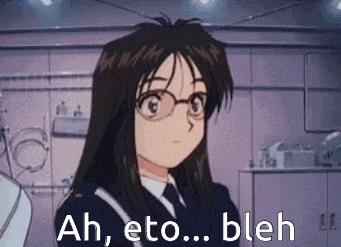
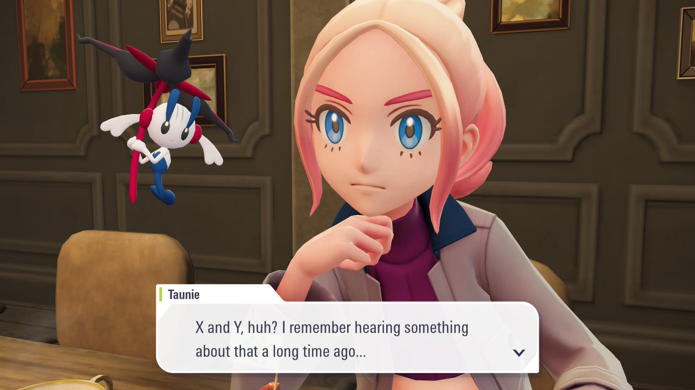
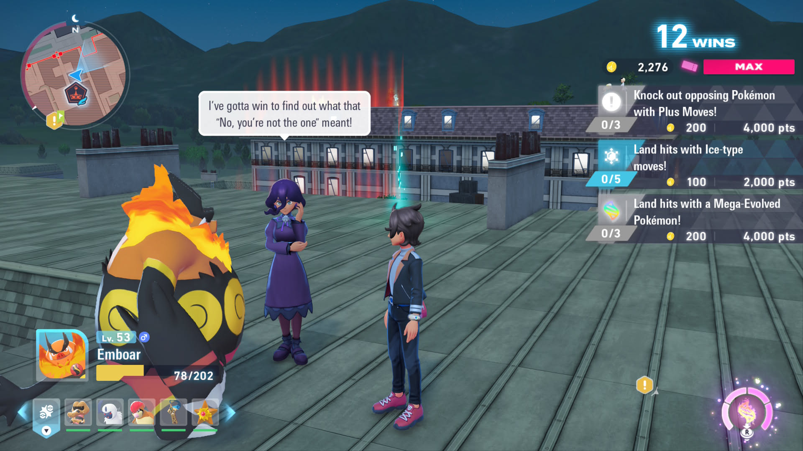
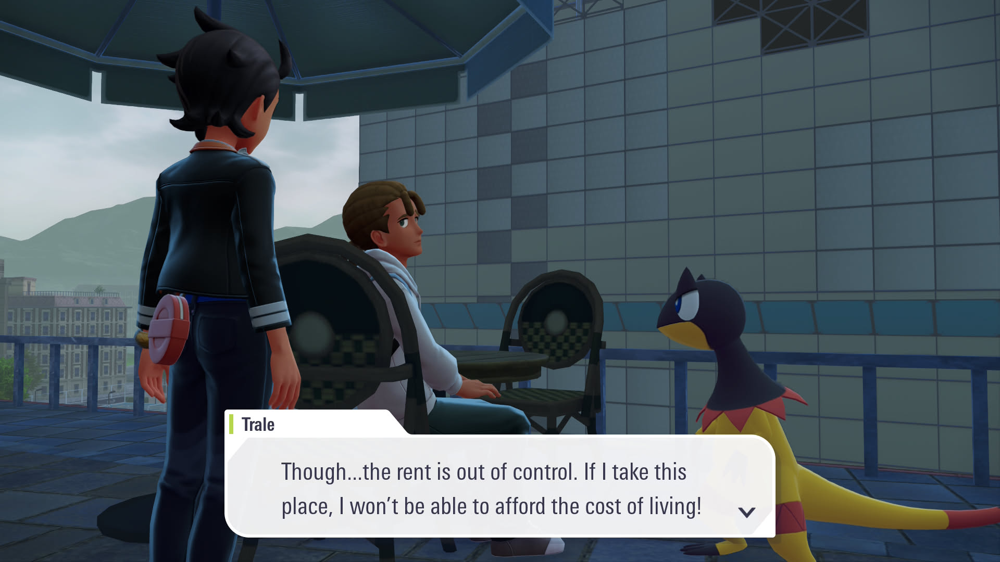
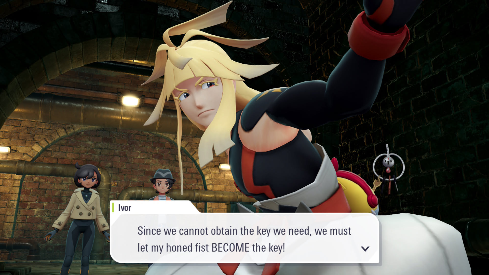
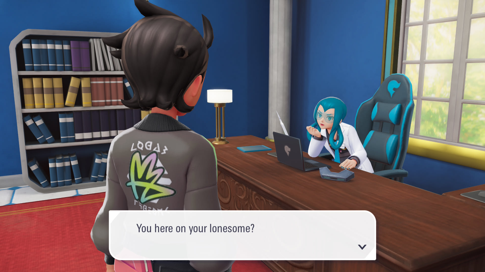

1game1week - Week 43 (10/22/25) - Pokemon Legends: Z-A
Hey all! It's week 43! (10/22 -> 10/29)
I think this is probably the first time in my posts that I've had a game as the subject of the post and in the new game list. My little queue for beaten games is dwindling and I'm afraid that I might lose the challenge...
It'd suck, since I'm so close to the end. It's less than 10 weeks! Surely I can make it happen...
I went to the midnight launch of this game at my local GameStop. It was fun, although it was an interesting thing that there were zero children in there. I know it was a school night, but I've definitely seen children out and about at night like that. There used to be really young guys that used to go to the Smash Bros. tournaments in the city I used to live in and stay until late.
Who knows? Maybe they went to a different GameStop, but it was a really funny sight that there was nothing but 20-somethings in line to get a children's videogame (myself included of course).
I got a cool tote bag and a code for an extra outfit out of it. So it was obviously all worth it.
As a complete aside, yesterday I got my OSSC Pro with Extra AV Out installed and was able to get downscaling working to feed all my consoles into my RGB modded CRT. Was super happy that it all worked without a hitch. The only real thing left is CRT geometry adjustments, but man, those are legitimately incredibly tough and I'm not sure whether or not I wanna tackle those more than I already have. It looks pretty okay, so maybe it's not so bad already? I think I should probably just leave it as is...
Anyways!
New games from 10/15 -> 10/21:
Pokemon Legends: Z-A (Switch 2)
Currently, my backlog is at +9 (lower is better, +0 from last week).
And onto 1g1w. Once again, a game is considered "beaten" if I've accomplished the main objective of the game.
GAME: Pokemon Legends: Z-A
PLATFORM: Switch 2
GENRE: RPG
STARTED ON: 10/15
BEATEN ON: 10/18
TOTAL PLAYTIME: 54 hours and 51 minutes
FIFTY FOUR HOURS AND FIFTY ONE MINUTES? IN LESS THAN A WEEK?

I might have very heavily cut my sleeping hours for this game... just maybe...
To be completely fair, I nearly 100%d this game. I have a full Living Dex, finished out all of the main and side quests, purchased all the Mega Stones, and finished all the Mabel Research quests (more on this later). Also, I went for the online mode and got the Greninjite, which wasn't required for completion, but felt cool to get nonetheless. If I wanted 100% completion, I'm only really missing some of the Colorful Screws. Who knows? I might go for it at some point, if only to say I legitimately have nothing else to do in Lumiose.
As random data, this actually beats out the playtime I had for Atelier Yumia and takes the number two spot for total playtime behind Final Fantasy XVI / Echoes of the Fallen.
I had a very fun time with the great majority of this game. I think the popular talking points online are buildings not really having much dimension to them and the lack of voice acting becoming really grating. I do agree with those points, but at the same time, I don't really think they hampered my experience enough to really care about them.
It was noticeable- particularly the voice acting during important / emotional moments. At some point, you stop caring about the buildings- mostly because the artstyle carries the hell out of it. But that's probably all the mention that those issues merit in this post. Anything further would probably just be the same as beating a dead horse or intentionally cherrypicking.
Personally, I had some issues with getting around Lumiose- particularly, to the rooftops. Sometimes I'd have to go around various places to even try to find a way up. It was really annoying. The map typically has icons for "Holo-Vators", but not all buildings have them. Some buildings, you climb by doing an obstacle course, or climbing a ladder, but those aren't marked in the map, so they're occasionally hard to find.
Maybe I'm stupid! It just would've been nicer for the game to clearly mark those / make them a little more obvious (at least the ladders, lol).

Somehow, this game really felt like one of the Pokemon movies. Protagonist enters a new city, gets dragged into a large conflict and ends up becoming some type of savior after a large climax. This is also really helped by the real-time battle system with actual hitboxes you can physically avoid. It feels natural this way and like a really good bridge between game and anime.
The combat is like a very, very barebones Xenoblade, but it fits what I feel a game like this should have. Honestly, it was really fun and a very welcome change of pace from the formula. It's a bit strange not having abilities, though.
Fighting Rogue Mega Evolved Pokemon felt okay. It was definitely a step up from the boss battles in Legends Arceus, where you'd just throw a satchel at it and try not to get hit. This is actual real-time combat between your Pokemon and the boss, while still having peril for the player's character since they're also in the range of things the boss can hit.
This is a random footnote, but online combat followed suit. It's essentially a 4-player battle, and you're using the same combat system. You're scored based on how many KOs you get. I half expected it to be more sweaty, but there's really not a lot of depth to the combat system. You select the move and hit the thing. Then, the thing hits you.

Characters in this game weren't the most complex people ever, and were written to be fun / humorous / interesting. Probably the best written ones were AZ or L, since they're returning characters so you're able to compare and contrast their characters here and in X and Y.
A good amount of new characters get a bit more of the spotlight since most of their story is tied to Lumiose itself, where the entire game takes place. I think most of them got their character arcs finished out by the end of the game, barring one horrid exception (again, more on this later).
Also, NPCs are really, really funny. Some of them talking about whether for Water type Pokemon if they use their sweat or "other bodily fluids", some of them asking if an AI would be able to craft a team for them, one of them complaining about not getting no paid vacations and getting their pay cut, some complaining about rent, and some references to X/Y mechanics like O-Powers and Super Training.
Verbatim, there is an NPC sitting at a cafe that says, "Sigh, another day without being reincarnated as a Pokemon."

A really fun part was catching. It was very similar to Legends Arceus, which already felt great. A very, very welcome addition was that you can KO a Pokemon and it'll not only allow you to still catch it for a few seconds, but boost its catch rate. It's sort of a gamble since you're still killing it and if that last catch fails it's gone, but it felt, again, very Pokemon anime-like.
There's a difference between turn-based combat in earlier entries and how it would "happen" in the Pokemon world, and the catching and battling mechanics in Legends Z-A feels a lot closer to the latter. Mind you- I love the Pokemon turn based combat, it's just probably not how it would go if "if was real".
Legends Z-A features a large amount of sidequests that really feel like they're tying the setting together and making it feel more "life-like". Truly, it makes me feel like Lumiose City is a place where not only the events of the story take place, but a place that people live in and are trying to make better after the events of X/Y. This pairs well with the NPC dialogue, and makes Lumiose feel fun to be in.
Also- I hate to once again point to the Pokemon anime, but it's kind of funny how the localization named various of the sidequests as if they were episode titles. "Guidance from a Yoga Master!", "A Sensitive Audino!", "A Big Weedle Problem!". I can practically hear Veronica Taylor saying these. Maybe it's just me...

Overall, Legends Z-A's battle/catching system, character stories, side content, and story were great. The game ran at a smooth 60 FPS on Switch 2, and I've mostly heard the tradeoff for Switch 1 is 30 FPS (though I'm sure there's more, I just haven't bothered to research).
However... after the credits roll, for someone wanting to 100% the game or obtain the shiny charm, it's really just getting started. Completion is locked behind Mabel's Research, which has you conducting various different activities in the game such as catching Pokemon, breaking Mega Crystals (random gems around Lumiose), trading, getting various collectibles, completing your Pokedex, and the biggest of all: battling.
The problem starts here: in the post game, you are essentially tasked with battle grinding. Hours upon hours of mindless battle grinding. For reference, the battle task wants you to win 1000 battles. By the game's end, I had just shy of 300 or so battles. I had done all available side quests, too, so it's not like I skimped out on battles just to get through the game. I did as many as I could.
So... where does that leave us?
The postgame allows you to continue on with the Z-A Royale, and it requires you to win 20 promotion matches (and you'll need, at maximum 20 matches per promotion match for a total of 400) to unlock the "final" sidequest (which also involves a few matches). So... Let's take our 300 from the main game and add it to our 425 or so from this grinding which may I add takes absolutely forever to do, and we're at 725 battles which is still over a quarter shy of our destination with all content unlocked.
So if you were me and your thumbs were already hurting from pressing the A button too much, AND online matches did not count towards this total (they're pretty long anyways so it wouldn't be all that good), what can you do to make an extra 275 matches happen?
Taping the A button down on a Turbo controller and occasionally pressing ZL to target the next Pokemon in Restaurant Le Nah. That's the option. It does 3 battles approximately every 2 minutes and 20 seconds. For 275 battles, we'd need to do 92 loops. 2 minutes and 20 seconds 92 times is 12880 seconds which is three and a half hours. Three and a half hours of just sitting there, pressing the ZL button sometimes. Either that, or you can keep tackling the Z-A Royale, but it'd take longer and you'd still not have much of a reward. What else is there?
Mind you. This is not the only mindless grind the game has to offer, as you're also tasked with breaking Mega Crystals all around Lumiose. You essentially target a rock with ZL and press one of your face buttons for one of your Pokemon to attack it. It's really simple. It just takes forever, and it's annoying that this game got rid of the way that Legends Arceus did it. Here, you're actually using your moves and have to deal with the cooldown associated, which means you can't just run around the map and throw out your Pokemon to break the rocks automatically.
Cooldown hurts a little bit when you have massive clumps of crystals in one location that requires you to just sit and wait for your moves to come back around- over and over and over again, until you reach 1000 crystals broken. Also, you have to be mindful of how many crystal shards you collect- the biggest thing you need these for is for buying Mega Stones, but you cannot just run around, do the 1000 crystals, and get all the Mega Stones, because your inventory caps out at 999. So you'll have to periodically offload- which is fine, it just breaks the mindless grind and makes it not so mindless.
To be honest, I wouldn't mind the battles at least if there was some type of battle facility, like in X/Y. The train station is right there, wouldn't it be cool to take a little detour to Kiloude City and visit the Battle Maison with your friends? It'd be an awesome opportunity to have a few extra returning characters from X/Y as well. Speaking of which...
Where ARE the characters from X/Y? Specifically, where's Clemont and Bonnie, the people whose gym sat right at the center of the game's premise? They're only even mentioned by one NPC offhand, and the NPC even says, "He 'was' a great inventor" and "She 'was' a quiz master"! Why "was"?! Are they dead?! What happened?!
Legends Z-A only features three returning characters from X/Y. Even in the post game, not even a crumb? No Serena/Calem superboss?
Actually, there's very little dialogue given bout the background/events in X/Y. It is glossed over- the Ultimate Weapon, Team Flare, AZ's lore, but there is very little outside of that, which feels really odd for a sequel of a game that came out over a decade ago. Wouldn't you want to give your players a bit more context? Maybe a refresher?

These grinds just felt like mindless, annoying padding for a reward that's normally tied to Dex completion, something that's also not the most simple thing in the world.
Speaking of Dex completion, some Pokemon spawns weren't really fun. I think the one on the top of my mind is Dratini, because it just randomly spawns atop a restaurant building in some random place... and that's the only spawn I know of. It is nowhere else, and it's not in any of the Wild Areas. This was really annoying to hunt down and the location was nonsensical to me, along the fact I had to find a path to that restaurant in the first place since there was no direct ladder / Holovator to it.
I know I've complained a good chunk. But this game was really enjoyable- it ran well, the characters were fun, the story was engaging, the core gameplay (battling / catching) is well executed for the world itself, themes weren't afraid to be a little off from what children might expect, and it makes me excited for Pokemon expanding on this model and delivering a larger experience closer to what mainline Pokemon is typically like, or at least making the world a little larger.
Overall... I think Legends Z-A was good, but not perfect. It's a good step up from Legends Arceus, and I hope the next entry is a step up from this.
I could fix Mabel btw

Thanks for reading! If you need to contact me for any reason, please feel free to email me at aru@hoshikawa-aru.com.